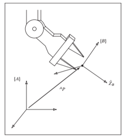
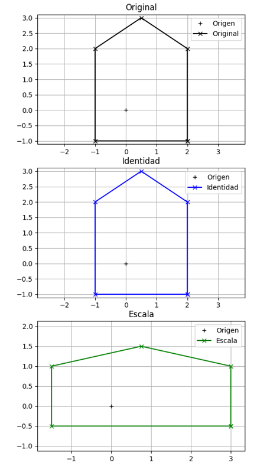
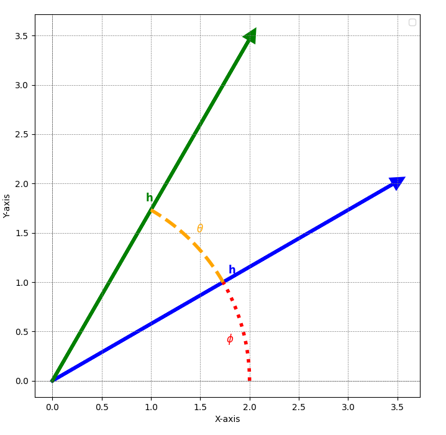
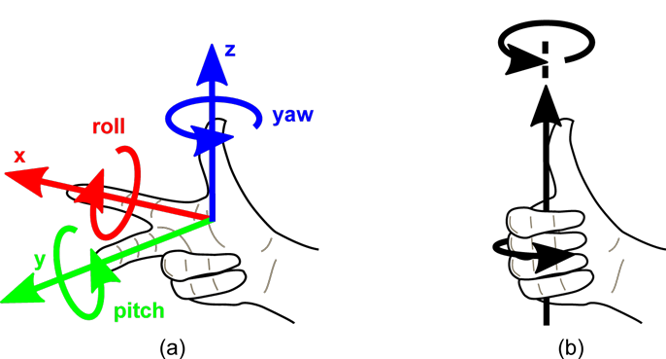
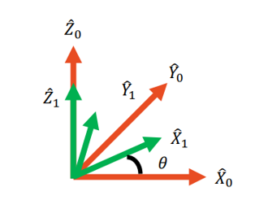
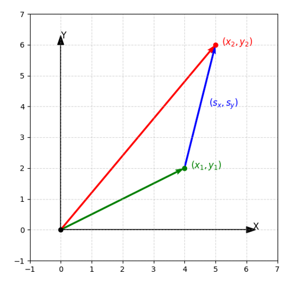
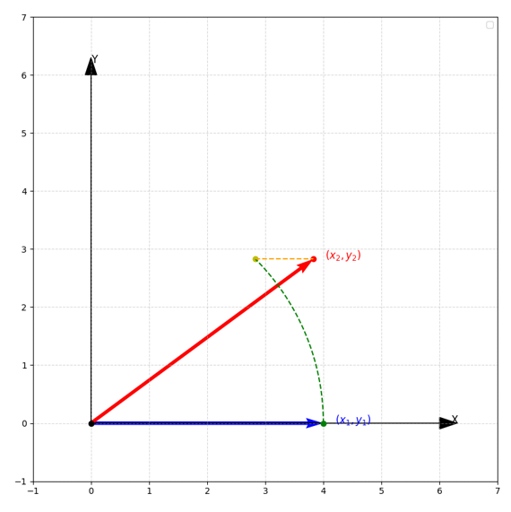
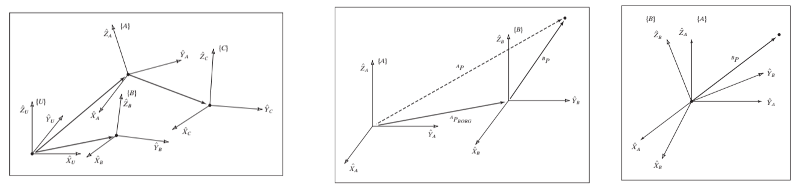
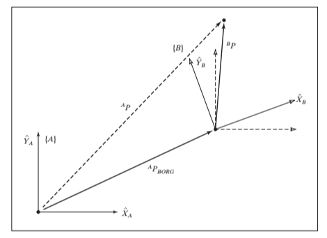

Spatial Descriptions and Transformations
In robotics, it is essential to describe the position and orientation of objects in three-dimensional space. This is typically done using coordinate frames and transformation matrices.
Position
The position of a point in 3D space can be represented using a 3-dimensional vector.
-
There must be a universal reference frame (often called the "world" frame) to which all other frames are related.
-
We can find any point using a vector of position 3x1 relative to a reference frame:
where:
\( p_x, p_y, p_z \) are the coordinates of the point in frame B with respect to frame A.
Orientation
To describe orientation in 3D space, we use a vector of rotation.
- To describe the orientation, we assign to the body its own frame, relative to the reference frame.
- The new frame is described using unit vectors of its main axes (x,y,z) in terms of A.
- By grouping them, it becomes a 3x3 rotation matrix

Transforms Math
-
To be able to represent the behavior of a robot over time, we need to obtain functions that describe how the position and orientation change.
-
We require functions that describe movement in space, considering position and orientation, and their transformations: translation and rotation.
Functions
A function is a mathematical relation that associates each element of a set (domain) with a unique element of another set (codomain).
Let's asume we have a function \( f(p): Ap \), where:
- \( A \) is a \( n \times n \) matrix, and \(n\) is the number of dimensions of \( p \).
- \( p \) is a vector of position.
- Functions for transforms must be linear.
For example:
Identity transformation
\[ \begin{bmatrix} X_2 \\ Y_2 \end{bmatrix}= \begin{bmatrix} 1 & 0 \\ 0 & 1 \end{bmatrix} \begin{bmatrix} X_1 \\ Y_1 \end{bmatrix} = \begin{bmatrix} X_1 \\ Y_1 \end{bmatrix} \]Scaling transformation
\[ \begin{bmatrix} X_2 \\ Y_2 \end{bmatrix}= \begin{bmatrix} S_x & 0 \\ 0 & S_y \end{bmatrix} \begin{bmatrix} X_1 \\ Y_1 \end{bmatrix} = \begin{bmatrix} S_x X_1 \\ S_y Y_1 \end{bmatrix} \]
If we use linear functions we have a few benefits:
- The superposition principle applies: the result of applying two functions in sequence is the same as applying a single function that is the sum of the two functions.
- The functions can be inverted: if a function transforms a point from position A to position B
- Linear transformations can be chained through multiplication.
Rotation Transformations

Rotation matrices properties
- The inverse of a rotation matrix is equal to its transpose:
- It's determinant is equal to 1:
$$ \text{det}({}^{A}_{B}\mathbf{R}) = 1 $$
- The composition of two rotation matrices results in another rotation matrix:
- We follow the right-hand rule for defining the direction of rotation around an axis.

Rotation Matrix in 3D
Any random rotation in 3D can be represented as a combination of three elemental rotations about the principal axes (X, Y, and Z). Called Euler angles.
We can still multiply rotation matrices to achieve combined rotations in 3D space. However, the order of multiplication matters because matrix multiplication is not commutative.
In robotics, you write vectors as columns and transform like this:
Where \( v \) is the original vector, \( R \) is the rotation matrix, and \( v' \) is the rotated vector.
If you do \( R_1 \) followed by \( R_2 \), you write:
So the matrix closest to the vector happens first → right-to-left application.
As we add another dimension, the rotation matrices become more complex. Instead of having a single function for rotation, we now have three separate functions, each corresponding to a rotation about one of the principal axes (X, Y, and Z).

Translation Transform
Where:
- \(p\) is the original position vector.
- \(b\) is the translation vector.

The translation transform is not linear because it does not satisfy the properties of linearity (it’s an affine transform, not linear because it doesn’t preserve the origin). Therefore, we cannot represent it using a simple matrix multiplication.
To overcome this limitation, we use homogeneous coordinates, which allow us to represent both rotation and translation in a unified framework using 4x4 matrices.
Homogeneous Coordinates
Let's figure out the matrix \( A \)
By solving the equations, we find that the transformation matrix \( A \) is:
Tranlation in 3D
In 3D space, we extend the concept of homogeneous coordinates to include the z-axis. A point in 3D space is represented as:
The transformation matrix for translation in 3D becomes a 4x4 matrix:
Homogeneous Transformation Matrix
To combine both rotation and translation in a single transformation, we use the homogeneous transformation matrix. In 3D space, this matrix is a 4x4 matrix that incorporates both the rotation matrix and the translation vector.

In 3D, the homogeneous transformation matrix \( T \) that combines rotation and translation is given by:
Frame Descriptions
When dealing with multiple coordinate frames, we often need to express the transformation from one frame to another. The homogeneous transformation matrix allows us to do this efficiently.

Example:
